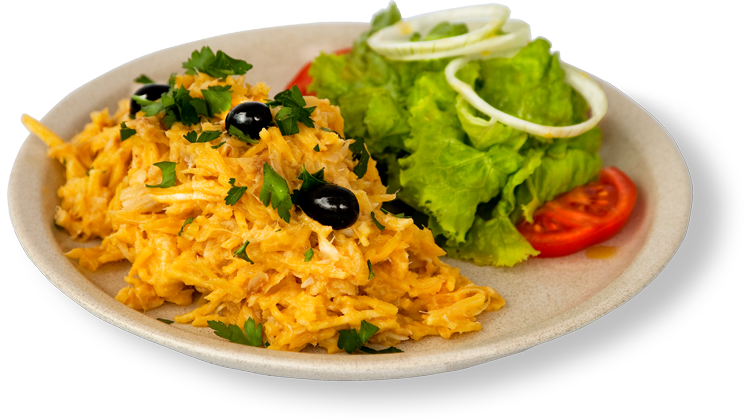

|
| Bacalhau à Bras |
|  |
Descrição
Este é um prato português de bacalhau.
fácil de confeccionar e delicioso
|
Ingredientes
- Bacalhau desfiado
- 2 Cebolas
- Louro
- Salsa
- Batata palha (pacote)
- Mostarda
- Ovos
- Pimenta branca
- Nóz moscada
- Azeite
|
Preparação
- Colocar num tacho um fundo de azeite e as cebolas cortadas em meias luas e a folha de louro
- deixar a cebola caramelizar e adiconar o bacalhau, a pimenta e a nóz moscada
- Passado um tempo coloque a mostarda e mexa
- Bata 3 ovos numa taça
- Adicione a batata palha e mexa bem
- Adicione os ovos e mexa de forma a que fique homogéneo
- Retifique os temperos, adicione salsa bem picadinha e mexa novamente. Et Voilá!
|